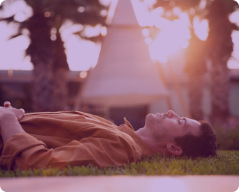
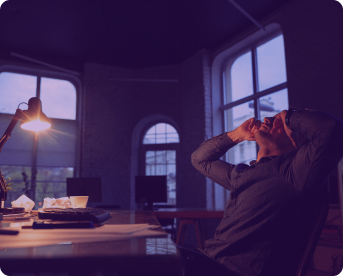
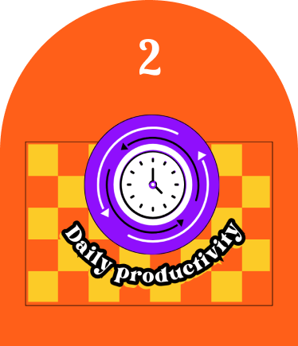
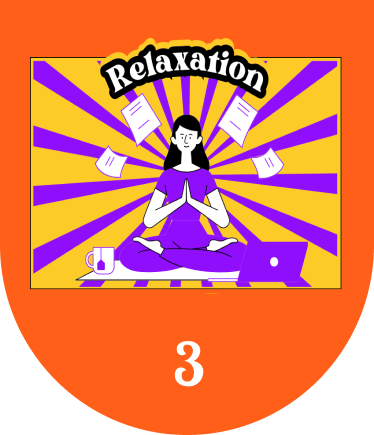
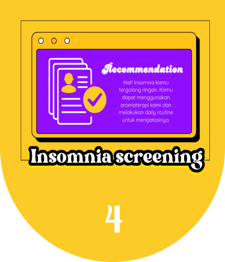

Daily Routine
Awali hari dengan kebiasaan sehat untuk tubuh
dan pikiranmu!
Minumlah 1-2 gelas air putih setelah bangun untuk menghidrasi tubuh. Lanjutkan dengan senam ringan atau yoga dan nikmati sarapan sehat untuk energi yang stabil sepanjang hari.
Daily Routine

Aktivitas Siang
Jangan tidur siang terlalu lama, cukup 20-30 menit untuk menghindari gangguan tidur
malam. Untuk tetap produktif dan efisien, hindari prokrastinasi dengan membuat to-do
list yang spesifik dan menggunakan teknik Pomodoro saat bekerja atau belajar.

Aktivitas Malam
Batasi kafein setelah pukul 12 siang dan pilih makan malam yang ringan untuk tidur
nyenyak. Praktikkan teknik relaksasi atau meditasi sebelum tidur dan matikan semua
gadget satu jam sebelum tidur untuk menghindari paparan blue light yang dapat
mengganggu produksi hormon melatonin.



